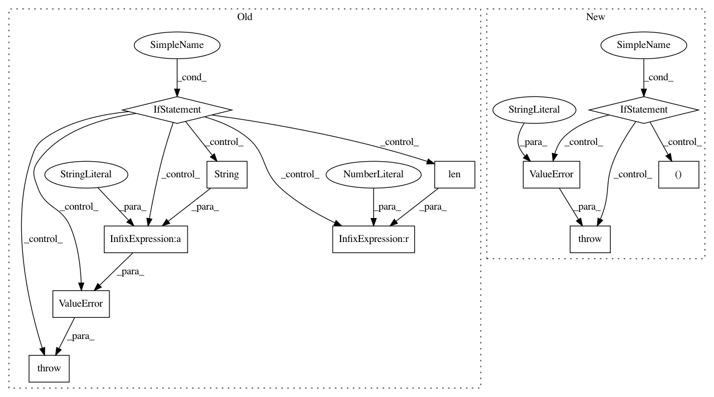

c25fa38deb4efc5445f64af3ec17eae0eb660d2f,keras/models.py,Sequential,add,#Sequential#Any#,409
Before Change
// to the input layer we just created.
layer(x)
if len(layer.inbound_nodes) != 1:
raise ValueError("A layer added to a Sequential model must "
"not already be connected somewhere else. "
"Model received layer " + layer.name +
" which has " +
str(len(layer.inbound_nodes)) +
" pre-existing inbound connections.")
if len(layer.inbound_nodes[0].output_tensors) != 1:
raise ValueError("All layers in a Sequential model "
"should have a single output tensor. "
"For multi-output layers, "
"use the functional API.")
After Change
// We were passed a model as first layer.
// This requires a specific way to figure out the
// input shape and dtype.
if not layer.layers:
raise ValueError("Cannot add an empty model "
"to a `Sequential` model.")
// In case of nested models: recover the first layer
// of the deepest model to infer input shape and dtype.
first_layer = layer.layers[0]
while isinstance(first_layer, (Model, Sequential)):
first_layer = first_layer.layers[0]
batch_shape = first_layer.batch_input_shape
dtype = first_layer.dtype
In pattern: SUPERPATTERN
Frequency: 3
Non-data size: 11
Instances
Project Name: keras-team/keras
Commit Name: c25fa38deb4efc5445f64af3ec17eae0eb660d2f
Time: 2017-11-09
Author: francois.chollet@gmail.com
File Name: keras/models.py
Class Name: Sequential
Method Name: add
Project Name: keras-team/keras
Commit Name: 023331ec2a7b0086abfc81eca16c84a1692ee653
Time: 2017-02-09
Author: francois.chollet@gmail.com
File Name: keras/layers/convolutional.py
Class Name: Cropping3D
Method Name: __init__
Project Name: keras-team/keras
Commit Name: 023331ec2a7b0086abfc81eca16c84a1692ee653
Time: 2017-02-09
Author: francois.chollet@gmail.com
File Name: keras/layers/convolutional.py
Class Name: Cropping2D
Method Name: __init__